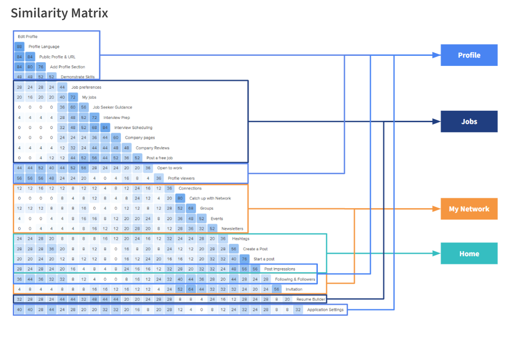

Overview
Project Context
LinkedIn is a global leader in job networking
and search services, backed by its exceptional reputation; however,
we believed we could further enhance LinkedIn's market value and
customer satisfaction by improving its job search and application process.
We engaged in two major processes to ensure we created a user-centric design that would truly help LinkedIn succeed, starting with exploratory methods before the redesign, and then various user testing to inform and test the redesign.
We engaged in two major processes to ensure we created a user-centric design that would truly help LinkedIn succeed, starting with exploratory methods before the redesign, and then various user testing to inform and test the redesign.

×

Evaluation Methods
Cognitive Walkthrough: What do we think are issues?
We began our exploration by creating a task:
“Find an internship or entry-level job and apply through Easy Apply”
We walked through this task as a new user would and broke this task into 12 steps to analyze in detail. At each step, we identified potential issues and ranked them based on severity to prioritize which issues needed to be addressed first.
“Find an internship or entry-level job and apply through Easy Apply”
We walked through this task as a new user would and broke this task into 12 steps to analyze in detail. At each step, we identified potential issues and ranked them based on severity to prioritize which issues needed to be addressed first.

Competitive Analysis: What do other companies do?
With the issues we identified in the cognitive walkthrough in
mind, we turned to LinkedIn’s competitors to assess the
current effectiveness of LinkedIn and propose ways to improve it.

Problem Scope
What problems should we tackle for this project?
From both the Cognitive Walkthrough and the Competitive Analysis,
we were able to identify and define many UI and feature
recommendations that we would tackle in the redesign.
Pre-design User Testing
Card Sort: How should we organize the information architecture?
In our cognitive walkthrough, our team had identified
that the features in the current information architecture
may be confusing. So, we utilized OptimalSort to conduct
a hybrid card sort and allow users to move features into
the categories that they felt were appropriate.

Qualitative Test: Are our hypotheses correct?
How did we know that the issues we had previously identified
were actual issues users face though? In order to test
our hypothesized issues and maintain a user-centric mindset,
we used Optimal Workshop to create tasks for users to
think-aloud while completing and then having them answer
a few qualitative questions about their experience.

Prototyping
Redesign: What did we change in our redesign
With our hypothesized issues confirmed with the qualitative test, Mela and I were able to create our redesign to incorporate the new features and information architecture. Below is a breakdown of the changes we made on each page involved in the job application process.Post-design User Testing
Quantitative Test: Did our changes have the effect we expected?
After creating a Figma mockup mimicking the existing LinkedIn flow and another for the new design, we hoped to ensure that our new redesign was truly more intuitive to use. To do this, we conducted an AB test with 29 participants, randomizing which version the participants analyzed first and gathered their opinions about each and comparing them.Reflection
What did I learn?
Our team chose the very ambitious task to improve upon such
a well established site and it was a great experience working
with an established site instead of one that needed a lot of
work. This project also allowed me to dive deeper into the
user research side of UX and define our own goals as we moved
through the project.Thank you to my team members for all your
hard work and participation in all the meetings we had.